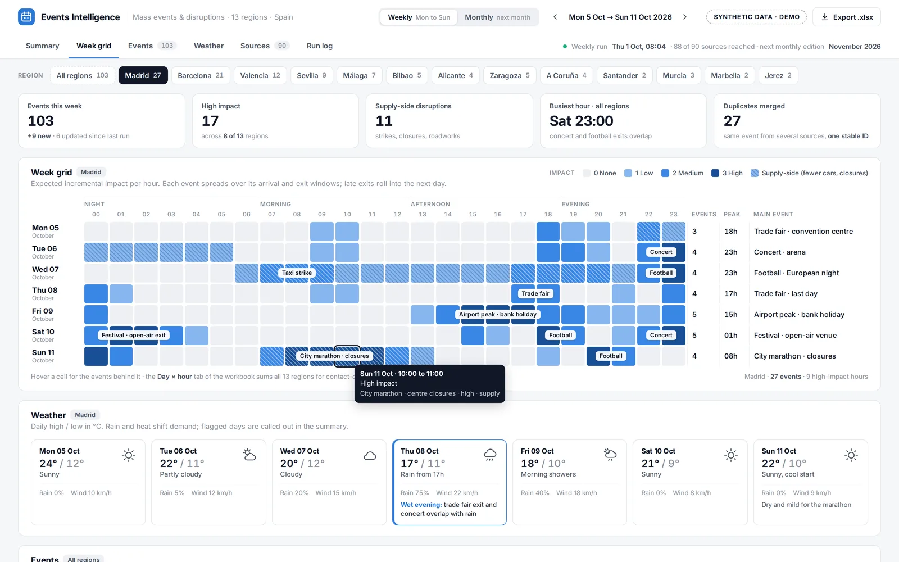
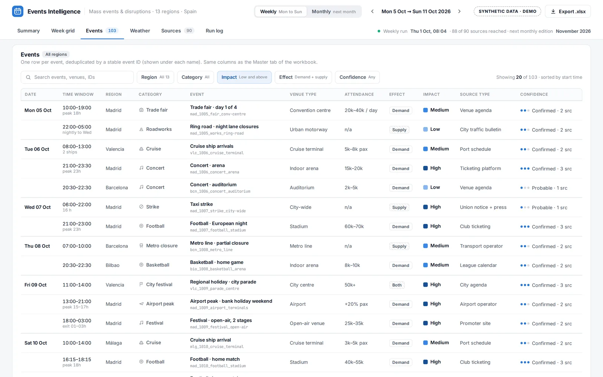

Case study · Cabify Spain · 2026
Events Intelligence
Forecasts learn from history, and history does not know that a stadium concert is on Saturday or that taxis strike on Thursday. Events Intelligence is a Claude skill that scans the week or month ahead for 13 Spanish regions and hands the contact centre and operations a workbook they can plan from, hour by hour.

Why it exists
The forecasting models in this portfolio learn from history. They do well on a normal Tuesday and badly on the day of a derby, a trade fair or a strike, which are exactly the days that matter for staffing and supply. A scheduled skill now collects them for all 13 regions, the same way every time.
How it works
- Sources. About 90 curated sources, grouped by type: league calendars, venue agendas, city event listings, trade fair calendars, union and transport notices, port and airport schedules. The list is part of the skill, so the output does not depend on what a search engine happens to return that day.
- Windows. Weekly mode covers Monday to the next Sunday. Monthly mode covers the next calendar month and runs early enough for the contact centre to plan rosters.
- Deduplication. The same concert appears in the venue, the ticketing site and the city agenda. Each event gets a stable ID, so it is counted once and later runs update it instead of adding a copy.
- Impact. Each event carries an attendance band, a time window with the build-up and the exit, and whether it moves demand or supply. A strike or a closure is flagged separately from a concert.
- Delivery. A 15-tab workbook: a master list, a day-by-hour grid and one tab per region, dropped in Drive and announced in Slack.
| Type | What it covers |
|---|---|
| Demand | Football and basketball matches, concerts, festivals, trade fairs, cruise arrivals, airport peaks on bank holidays |
| Supply | Taxi or transport strikes, demonstrations, road closures, roadworks, marathons and parades |
| Rules | Low-emission zones, election days and other one-off restrictions |

What I learned
- A curated source list beats open search. It is boring to maintain and it is the reason the output is stable from one week to the next.
- The exit matters as much as the start. Demand peaks when a stadium empties, not when the match begins, so every event carries its time window.
The screenshots are a synthetic render: invented events and generic venue types, in the layout of the real workbook.